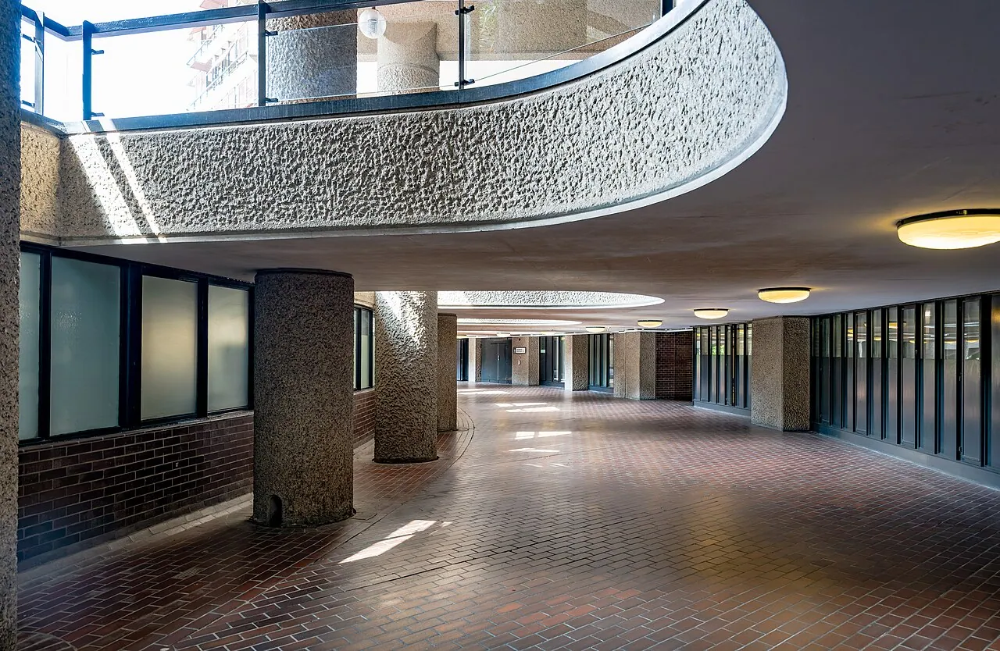
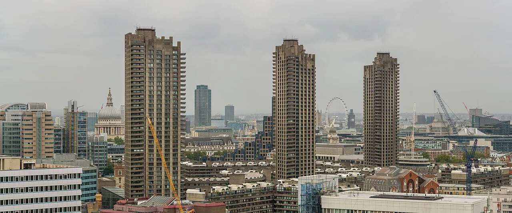
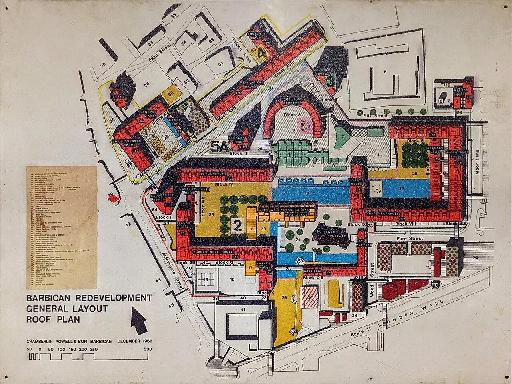

1/9 · Exterior · London: BARBICAN, Brandon Mews City of LondonPhoto: Tilman2007 · CC BY-SA 4.0 · source2/9 · Exterior · London: BARBICAN, City of London School for girls City of LondonPhoto: Tilman2007 · CC BY-SA 4.0 · source3/9 · Exterior · London: BARBICAN, Defoe House City of LondonPhoto: Tilman2007 · CC BY-SA 4.0 · source4/9 · Interior · London: BARBICAN, Frobisher Crecsent City of LondonPhoto: Tilman2007 · CC BY-SA 4.0 · source

5/9 · Interior · London: BARBICAN, Frobisher Crecsent City of LondonPhoto: Tilman2007 · CC BY-SA 4.0 · source6/9 · Detail · London: BARBICAN, Defoe House, Defoe House City of LondonPhoto: Tilman2007 · CC BY-SA 4.0 · source

7/9 · Context · Barbican Estate towers from the terrace of the White Collar Factory, Old StreetPhoto: Colin · CC BY-SA 4.0 · source8/9 · Context · London: BARBICAN, Lake City of LondonPhoto: Tilman2007 · CC BY-SA 4.0 · source

9/9 · Plan · BARBICAN REDEVELOPMENT GENERAL LAYOUT ROOF PLANPhoto: Jonathan Platteau · CC BY-SA 4.0 · source